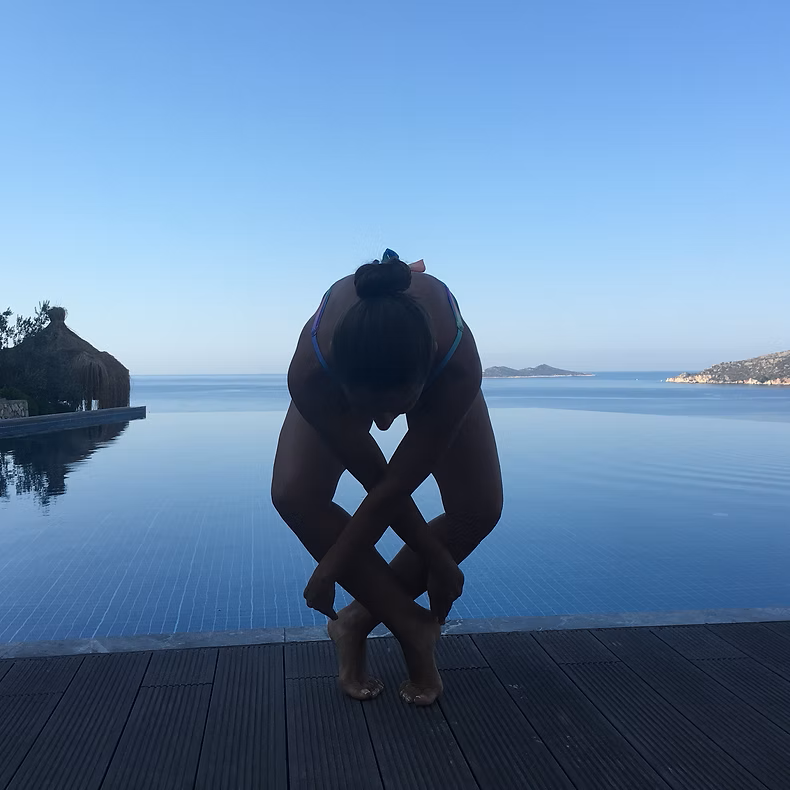

Gamze
Marmara Üniversitesi master mezunu olan Gamze; çocukluğundan itibaren cimnastik, yüzme, atletizm ve dans branşlarıyla iç içe büyümüş, sporcu olarak müsabakalara katılmış millî sporcu geçmişine sahiptir.
20 yılı aşkın süredir farklı yaş gruplarıyla pilates, gymnastic, yoga, yüzme, TRX, fitness-cardio ve Latin dansları alanlarında çalışmaktadır. Aura Reform Studio’yu kişiye özen gösteren, disiplinli ama samimi bir hareket alanı olarak hayata geçirmiştir.
CimnastikTürkiye Cimnastik Federasyonu
FitnessTürkiye Vücut Geliştirme, Fitness ve Bilek Güreşi Federasyonu
YüzmeTürkiye Yüzme Federasyonu
DansTürkiye Dans Sporları Federasyonu